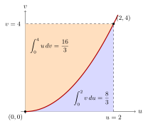
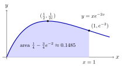
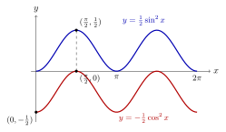

8.2 Integration by Parts¶
Guiding question
Substitution (Theorem 8.1.1) is the Chain Rule read backward. In this section we read the Product Rule backward and obtain integration by parts, the standard tool for products such as \(xe^x\), \(x\sin x\) and \(e^x\sin x\), and for single functions such as \(\ln x\), \(\tan^{-1}x\) and \(\sin^{-1}x\) whose derivatives are simpler than the functions themselves. We prove the formula for indefinite and definite integrals, draw the picture behind it, and learn how to choose the two factors (the heuristic LIATE, and what to do when it fails). We then prove the formulas that parts produces: the integrals of \(\ln x\), \(\tan^{-1}x\) and \(\sin^{-1}x\), reduction formulas for \(x^ne^{ax}\), \(\sin^nx\) and \(\cos^nx\), the “cyclic” integrals \(e^{ax}\sin bx\) and \(e^{ax}\cos bx\), and the tabular method for a polynomial times a function that is easy to integrate repeatedly. Calculus I facts used, all by name: the Product Rule, the Chain Rule, the Fundamental Theorem of Calculus, the derivatives of \(\ln x\), \(\tan^{-1}x\) and \(\sin^{-1}x\), and the fact that two antiderivatives on an interval differ by a constant. From Section 8.1 we use substitution (Theorem 8.1.1), the table of basic formulas, and long division and completing the square (Procedure 8.1.9).
By the end of this section you should be able to:
-
state and prove the integration by parts formula, in its indefinite and definite forms, and explain it with areas;
-
choose \(u\) and \(dv\) with the LIATE heuristic, recognize when it fails, and repair the choice;
-
integrate \(\ln x\), \(\tan^{-1}x\) and \(\sin^{-1}x\), and use repeated parts and the reduction formulas for \(x^ne^{ax}\), \(\sin^nx\) and \(\cos^nx\);
-
solve the “cyclic” integrals \(\int e^{ax}\sin bx\,dx\) and \(\int e^{ax}\cos bx\,dx\), and use the tabular method with a proof of why it works;
-
combine parts with substitution, check every answer by differentiating, and avoid the common errors.
The formula and why it works¶
The Product Rule says \((uv)'=u'v+uv'\). Integrating both sides and rearranging gives a rule for integrating a product \(uv'\), provided we can integrate \(vu'\). The theorem states this carefully, with the hypotheses needed for the definite form.
Theorem 8.2.1: Integration by parts
Let \(u\) and \(v\) be differentiable functions on an interval \(I\).
(1) Indefinite form. If \(vu'\) has an antiderivative on \(I\), then so does \(uv'\), and
In the shorter notation \(dv=v'(x)\,dx\), \(du=u'(x)\,dx\) this reads \(\displaystyle\int u\,dv=uv-\int v\,du\).
(2) Definite form. If \(u'\) and \(v'\) are continuous on \([a,b]\subseteq I\), then
Proof. (1) Let \(H\) be an antiderivative of \(vu'\) on \(I\), so \(H'=vu'\). By the Product Rule \((uv)'=u'v+uv'\), so
Hence \(uv-H\) is an antiderivative of \(uv'\) on \(I\). Any other antiderivative differs from it by a constant, so \(\int uv'\,dx=uv-\int vu'\,dx\), where the second integral stands for \(H+C\).
(2) The functions \(u\), \(v\), \(u'\) and \(v'\) are continuous on \([a,b]\), so \((uv)'=u'v+uv'\) is continuous there. The Fundamental Theorem of Calculus (the part that evaluates an integral with an antiderivative) gives
Both \(u'v\) and \(uv'\) are continuous, so both integrals exist and the integral of the sum is the sum of the integrals. Subtracting \(\int_a^bvu'\,dx\) from both sides gives the formula. ◻ ∎
Why the name? We split the integrand \(uv'\) into two parts: \(u\), which we will differentiate, and \(dv=v'\,dx\), which we will integrate. The goal is that the new integral \(\int v\,du\) is simpler than the one we started with, or is one we can already do. Notice that integration by parts does not evaluate the integral; it trades it for another.
A picture. Suppose \(u(x)\) and \(v(x)\) are nonnegative and increase with \(x\) on \([a,b]\). Then the point \((u(x),v(x))\) traces a rising curve in a \(uv\)-plane. The area under the curve, between the curve and the \(u\)-axis, is \(\int v\,du\); the area to the left of the curve, between the curve and the \(v\)-axis, is \(\int u\,dv\). Together with the small rectangle \([0,u(a)]\times[0,v(a)]\) these two areas fill the big rectangle \([0,u(b)]\times[0,v(b)]\), so
which is the definite formula in the form \(\int u\,dv=\big[uv\big]-\int v\,du\). Figure 1 shows \(u=x\), \(v=x^2\) for \(0\le x\le2\), that is, the curve \(v=u^2\) from \((0,0)\) to \((2,4)\): the two areas are \(\frac83\) and \(\frac{16}3\) and they add up to \(2\cdot4=8\). The picture illustrates the formula; the proof above is what establishes it.

Figure 1. The curve \(v=u^2\) for \(0\le u\le2\). Blue: the area under the curve, \(\int v\,du\). Orange: the area to the left of the curve, \(\int u\,dv\). Together they fill the rectangle of area \(2\cdot4=8\).
Procedure 8.2.2: Integration by parts
-
Split the integrand into \(u\) (to be differentiated) and \(dv\) (everything else, including \(dx\), to be integrated). Section “Choosing \(u\) and \(dv\)” below gives a heuristic.
-
Table. Write \(u=\dots\), \(dv=\dots\,dx\), then \(du=u'\,dx\) and \(v=\) one antiderivative of \(dv\) (no constant is needed; see Example 8.2.3).
-
Apply \(\int u\,dv=uv-\int v\,du\). Watch the minus sign, and remember that \(uv\) is the product of \(u\) with \(v\), not with \(dv\).
-
Finish the new integral (by another round of parts, a substitution, or a table formula), then add \(C\).
-
Definite integrals: evaluate \(\big[uv\big]_a^b\) and the new integral between the same limits, both in the variable \(x\). Do not change limits unless you also substitute.
-
Check by differentiating the answer.
Example 8.2.3: A first integral by parts
Find \(\int x\cos2x\,dx\).
Solution. The integrand is a product. The factor \(x\) becomes simpler when differentiated (its derivative is \(1\)), and \(\cos2x\) is easy to integrate, so we take \(u=x\) and \(dv=\cos2x\,dx\). Then \(du=dx\), and \(v=\int\cos2x\,dx=\frac12\sin2x\) (formula (3) of Section 8.1 with \(a=2\)).
Parts gives
Here \(\int\sin2x\,dx=-\frac12\cos2x\) (formula (4) with \(a=2\)), and the two minus signs combine to a plus.
Check by differentiating. By the Product Rule and the Chain Rule,
because the two terms in \(\sin2x\) cancel.
Why no constant is needed in \(v\). Suppose we had taken the antiderivative \(v=\frac12\sin2x+5\) instead. Then
the same answer: the extra \(5\) contributes \(5x\) in the first term and \(-5x\) in the second. In general, replacing \(v\) by \(v+K\) adds \(Ku\) to \(uv\) and \(K\int u'\,dx=Ku\) is subtracted, so \(K\) cancels.
Knowledge Check 8.2.1: Your first integral by parts
Evaluate \(\int xe^{-3x}\,dx\). State your choice of \(u\) and \(dv\) and check by differentiating.
Pause and think 8.2.1: Does \(0=1\)?
Apply parts to \(\int\frac{dx}{x}\) with \(u=\frac1x\) and \(dv=dx\). Then \(du=-\frac1{x^2}\,dx\), \(v=x\), and
Subtracting \(\int\frac{dx}x\) from both sides seems to give \(0=1\). Where is the flaw? (Think about what the symbol \(\int\cdots dx\) stands for.)
Answer and discussion
The symbol \(\int\frac{dx}x\) stands for a whole family of antiderivatives, not one number, so cancelling it from both sides is only valid up to a constant: the true statement is \(\int\frac{dx}x=1+\int\frac{dx}x\) as families, which says \(0=1+C\) for some \(C\) (namely \(C=-1\)). No contradiction arises.
Example 8.2.4: A definite integral and the area it measures
Evaluate \(\int_0^1xe^{-2x}\,dx\). This is the area of the region under \(y=xe^{-2x}\) for \(0\le x\le1\) (Figure 2).
Solution. Take \(u=x\) and \(dv=e^{-2x}\,dx\). Then \(du=dx\) and \(v=-\frac12e^{-2x}\) (formula (9) with \(a=-2\)). Using the definite form of Theorem 8.2.1, with both integrals written in \(x\) and the limits \(0\) and \(1\),
The boundary term is \(-\frac12\cdot1\cdot e^{-2}-\left(-\frac12\cdot0\cdot e^0\right)=-\frac12e^{-2}\). The remaining integral is
Adding the two pieces,
Check. Differentiating \(F(x)=-\frac12xe^{-2x}-\frac14e^{-2x}=-\frac{(2x+1)e^{-2x}}4\) gives \(-\frac12e^{-2x}+xe^{-2x}+\frac12e^{-2x}=xe^{-2x}\), and \(F(1)-F(0)=-\frac34e^{-2}+\frac14\), the same value. The number is plausible: on \([0,1]\) the height never exceeds \(\frac1{2e}\approx0.184\) (at \(x=\frac12\)), so the area is less than \(0.184\cdot1\), and \(0.1485\) is below that bound.

Figure 2. The region under \(y=xe^{-2x}\) on \([0,1]\). Its area is \(\int_0^1xe^{-2x}\,dx=\frac14-\frac34e^{-2}\).
Integrals of \(\ln x\), \(\tan^{-1}x\) and \(\sin^{-1}x\)¶
A single function has no obvious “product”, but we can always write \(f(x)=f(x)\cdot1\) and take \(u=f(x)\), \(dv=dx\). This works when \(f'\) is simpler than \(f\), as it is for the logarithm and the inverse trigonometric functions. (Section 8.1 could not integrate these functions; no substitution helps.)
Theorem 8.2.5: Integrals of the logarithm and the inverse tangent and sine
Proof. In each case take \(dv=dx\), so \(v=x\), and apply Theorem 8.2.1(1).
Logarithm. Let \(u=\ln x\), so \(du=\frac1x\,dx\) (Calculus I). Then
Inverse tangent. Let \(u=\tan^{-1}x\), so \(du=\frac{dx}{1+x^2}\). Then
In the last integral let \(w=1+x^2\), so \(dw=2x\,dx\) and \(x\,dx=\frac12\,dw\) (Theorem 8.1.1). Since \(w>0\),
Hence \(\int\tan^{-1}x\,dx=x\tan^{-1}x-\frac12\ln\left(1+x^2\right)+C\).
Inverse sine. Let \(u=\sin^{-1}x\) for \(\lvert x\rvert<1\), so \(du=\frac{dx}{\sqrt{1-x^2}}\). Then
Let \(w=1-x^2\), so \(dw=-2x\,dx\) and \(x\,dx=-\frac12\,dw\). Then
Therefore \(\int\sin^{-1}x\,dx=x\sin^{-1}x+\sqrt{1-x^2}+C\) (the two minus signs give a plus). ◻ ∎
The antiderivative \(x\sin^{-1}x+\sqrt{1-x^2}\) is continuous on \([-1,1]\), so the formula can also be used for definite integrals with limits \(\pm1\). The same idea (take \(dv=dx\)) integrates \(\ln(ax)\), \(\tan^{-1}(ax)\), \(\sin^{-1}(ax)\) and \(\cos^{-1}x\), and Example 8.2.6 shows it combined with a second factor.
Example 8.2.6: An inverse tangent times a power
Find \(\int x\tan^{-1}x\,dx\).
Solution. The derivative of \(\tan^{-1}x\) is a rational function, but its antiderivative is more complicated, while \(x\) is easy to integrate. So take \(u=\tan^{-1}x\) and \(dv=x\,dx\). Then \(du=\frac{dx}{1+x^2}\) and \(v=\frac{x^2}2\). By Theorem 8.2.1,
The new integrand has numerator and denominator of the same degree, so we divide (Procedure 8.1.9): \(x^2=(x^2+1)-1\), so \(\frac{x^2}{1+x^2}=1-\frac1{1+x^2}\). Then
using \(\int\frac{dx}{1+x^2}=\tan^{-1}x\) (formula (11) with \(a=1\)). Subtracting it from the first term,
Check. \(\frac{d}{dx}\left[\frac{x^2+1}2\tan^{-1}x-\frac x2\right]=x\tan^{-1}x+\frac{x^2+1}2\cdot\frac1{1+x^2}-\frac12=x\tan^{-1}x+\frac12-\frac12=x\tan^{-1}x\).
Knowledge Check 8.2.2: An inverse sine
Evaluate \(\int_0^{1/2}\sin^{-1}x\,dx\) and give a decimal value.
Choosing \(u\) and \(dv\): the heuristic LIATE¶
Parts only helps if two things hold: we can find \(v=\int dv\), and \(\int v\,du\) is simpler than (or at least no harder than) \(\int u\,dv\). A well-known rule of thumb is to take \(u\) to be the first of the following types that occurs in the integrand:
Logarithmic \(\to\) Inverse trigonometric \(\to\) Algebraic (powers and polynomials) \(\to\) Trigonometric \(\to\) Exponential.
The reason is the behavior under differentiation and integration. Differentiating a logarithm or an inverse trigonometric function produces an algebraic function, which is simpler; differentiating a power lowers its degree; but sines, cosines and exponentials reproduce themselves under both operations, so they make good choices for \(dv\). (Some books use the order LIPET, which swaps the last two letters; for a product of a sine and an exponential either order works, see the cyclic case below.) LIATE is a heuristic, a guide that usually works and is not a theorem: it can fail, and sometimes two choices both work.
Example 8.2.7: Two choices that both work
Find \(\int x\ln x\,dx\) for \(x>0\) in two ways.
Solution. LIATE choice. \(\ln x\) comes before \(x\) in the list, so \(u=\ln x\), \(dv=x\,dx\), \(du=\frac{dx}x\), \(v=\frac{x^2}2\):
The other choice. Take \(u=x\), \(dv=\ln x\,dx\). Then \(du=dx\) and \(v=x\ln x-x\) (Theorem 8.2.5). Writing \(I=\int x\ln x\,dx\),
The unknown \(I\) appears on both sides (compare the cyclic case below). Adding \(I\) to both sides and dividing by \(2\),
Both choices give the same answer, but the second is longer: it needs the integral of \(\ln x\) first and then an equation to solve. LIATE picked the economical route. A bad choice makes things worse: for \(\int xe^x\,dx\) the choice \(u=e^x\), \(dv=x\,dx\) leads to \(\frac{x^2}2e^x-\frac12\int x^2e^x\,dx\), and the power of \(x\) has gone up.
Example 8.2.8: When LIATE fails
Find \(\int x^3e^{x^2}\,dx\).
Solution. LIATE puts the algebraic factor \(x^3\) before the exponential, suggesting \(u=x^3\), \(dv=e^{x^2}\,dx\). But \(e^{x^2}\) has no antiderivative that we can write with the functions we know (a later chapter on power series shows how to represent it), so \(v\) cannot be found: the heuristic fails. The fix is to put part of the algebraic factor into \(dv\): write \(x^3e^{x^2}\,dx=x^2\cdot\left(xe^{x^2}\,dx\right)\) and take \(u=x^2\), \(dv=xe^{x^2}\,dx\). By substitution (\(w=x^2\), \(dw=2x\,dx\), Theorem 8.1.1), \(v=\int xe^{x^2}\,dx=\frac12e^{x^2}\), and \(du=2x\,dx\). Then
A second route. Substitute first: with \(w=x^2\), \(x^3e^{x^2}\,dx=x^2e^{x^2}\cdot x\,dx=\frac12we^w\,dw\), and \(\frac12\int we^w\,dw=\frac12\left(we^w-e^w\right)=\frac{x^2-1}2e^{x^2}\) by parts with \(u=w\), \(dv=e^w\,dw\). The two routes agree. Check: \(\frac{d}{dx}\left[\frac{x^2-1}2e^{x^2}\right]=xe^{x^2}+\frac{x^2-1}2\cdot2xe^{x^2}=x^3e^{x^2}\).
Pause and think 8.2.2: Why logarithms first?
\(\int\ln x\,dx\) is itself a perfectly good integral, yet LIATE puts \(\ln x\) at the very front of the list, to be differentiated, and not integrated. Explain the ranking: what happens to \(\ln x\) under differentiation, and what would happen to it as a choice for \(dv\) in \(\int x^3\ln x\,dx\)?
Answer and discussion
A logarithm is hard to integrate (it needs parts itself) but easy to differentiate, and its derivative \(\frac1x\) is algebraic and simpler. If \(\ln x\) is put into \(dv\) you must first integrate it, getting \(x\ln x-x\), which is more complicated, so the second integral is no easier.
Repeated parts and reduction formulas¶
When the algebraic factor is \(x^n\) with \(n\ge2\), one round of parts only lowers the power by one, so we integrate by parts again, and again, until the power reaches \(0\).
Example 8.2.9: Parts twice
Find \(\int x^2\sin3x\,dx\).
Solution. Round 1. Take \(u=x^2\) (algebraic before trigonometric), \(dv=\sin3x\,dx\). Then \(du=2x\,dx\) and \(v=-\frac13\cos3x\) (formula (4) with \(a=3\)):
Round 2. The new integral has \(x\) to the first power. Take \(u=x\), \(dv=\cos3x\,dx\), so \(du=dx\), \(v=\frac13\sin3x\):
because \(\int\sin3x\,dx=-\frac13\cos3x\). Assemble. Substituting into Round 1 and multiplying out \(\frac23\),
Check. Differentiate term by term: \(\frac{d}{dx}\left[-\frac13x^2\cos3x\right]=-\frac23x\cos3x+x^2\sin3x\), \(\frac{d}{dx}\left[\frac29x\sin3x\right]=\frac29\sin3x+\frac23x\cos3x\), \(\frac{d}{dx}\left[\frac2{27}\cos3x\right]=-\frac29\sin3x\). The terms in \(x\cos3x\) cancel, the terms in \(\sin3x\) cancel, and \(x^2\sin3x\) remains.
The pattern \(\int x^ne^{ax}\,dx\) can be handled once and for all by a reduction formula: an identity that expresses an integral involving \(n\) in terms of a similar integral with a smaller \(n\).
Theorem 8.2.10: Reduction formula for \(x^ne^{ax}\)
Let \(a\ne0\) and let \(n\ge1\) be an integer. Then
Consequently, for every integer \(n\ge0\),
Proof. Take \(u=x^n\) and \(dv=e^{ax}\,dx\). Then \(du=nx^{n-1}\,dx\) and \(v=\frac1ae^{ax}\), and Theorem 8.2.1 gives
For the second formula we use induction on \(n\). For \(n=0\) the sum has the single term \(k=0\), equal to \((-1)^0\frac{0!}{0!}\frac{1}{a}=\frac1a\), and \(\int e^{ax}\,dx=\frac{e^{ax}}a+C\). Suppose the formula holds for \(n\). By the reduction formula for \(n+1\) and the induction hypothesis,
(We used \(-(-1)^{n-k}=(-1)^{n+1-k}\), \((n+1)\,n!=(n+1)!\) and \(\frac1a\cdot\frac1{a^{n-k+1}}=\frac1{a^{n+1-k+1}}\).) The term \(\frac{x^{n+1}}a\) is exactly the missing term \(k=n+1\) of the formula for \(n+1\), since \((-1)^0\frac{(n+1)!}{(n+1)!}\frac{x^{n+1}}{a^1}=\frac{x^{n+1}}a\). So the formula holds for \(n+1\). ◻ ∎
For \(a=1\) the closed formula gives \(\int x^2e^x\,dx=e^x\left(x^2-2x+2\right)+C\) and \(\int x^3e^x\,dx=e^x\left(x^3-3x^2+6x-6\right)+C\). Integrals of this kind appear later when the error in a Taylor polynomial is estimated.
Sines and cosines have reduction formulas in the exponent. The proof uses parts once and the Pythagorean identity.
Theorem 8.2.11: Reduction formulas for \(\sin^nx\) and \(\cos^nx\)
For every integer \(n\ge2\),
In particular, \(\displaystyle\int_0^{\pi/2}\sin^nx\,dx=\frac{n-1}n\int_0^{\pi/2}\sin^{n-2}x\,dx\) and the same holds with \(\cos\) in place of \(\sin\).
Proof. Sine. Write \(\sin^nx=\sin^{n-1}x\cdot\sin x\) and take \(u=\sin^{n-1}x\), \(dv=\sin x\,dx\). Then \(du=(n-1)\sin^{n-2}x\cos x\,dx\) and \(v=-\cos x\), so
Now \(\cos^2x=1-\sin^2x\), so \(\sin^{n-2}x\cos^2x=\sin^{n-2}x-\sin^nx\) and
The unknown integral \(\int\sin^nx\,dx\) appears on both sides. Adding \((n-1)\int\sin^nx\,dx\) to both sides gives \(n\int\sin^nx\,dx=-\sin^{n-1}x\cos x+(n-1)\int\sin^{n-2}x\,dx\), and dividing by \(n\) gives the formula. (Each integral sign stands for one fixed antiderivative; all constants are collected in the final \(+C\).)
Cosine. Take \(u=\cos^{n-1}x\), \(dv=\cos x\,dx\), so \(du=-(n-1)\cos^{n-2}x\sin x\,dx\) and \(v=\sin x\):
using \(\sin^2x=1-\cos^2x\). Adding \((n-1)\int\cos^nx\,dx\) to both sides and dividing by \(n\) gives the formula.
Definite form. For \(n\ge2\) the boundary terms vanish on \(\left[0,\frac\pi2\right]\). For the sine, \(-\sin^{n-1}x\cos x\) equals \(-1\cdot0=0\) at \(x=\frac\pi2\) (because \(\sin\frac\pi2=1\) and \(\cos\frac\pi2=0\)) and \(-0^{n-1}\cdot1=0\) at \(x=0\) (because \(n-1\ge1\)). For the cosine, \(\cos^{n-1}x\sin x\) equals \(0^{n-1}\cdot1=0\) at \(x=\frac\pi2\) and \(1\cdot0=0\) at \(x=0\). With the boundary terms gone, the formulas give the last statement. ◻ ∎
The formulas hold with \(\sin^{n-2}x\) and \(\cos^{n-2}x\) replaced by \(1\) when \(n=2\): \(\int\sin^2x\,dx=-\frac{\sin x\cos x}2+\frac x2+C\). A later section of this chapter uses these formulas for products of powers of sine and cosine, and adds the corresponding formulas for the tangent and the secant.
Knowledge Check 8.2.3: A reduction formula
Use the reduction formula for \(\cos^nx\) to evaluate \(\int\cos^3x\,dx\). Then show that your answer equals \(\sin x-\frac13\sin^3x\).
The cyclic case: \(e^{ax}\sin bx\) and \(e^{ax}\cos bx\)¶
Neither factor of \(e^{ax}\sin bx\) gets simpler under differentiation, and the Pythagorean trick of the last proof has a relative here: after two rounds of parts the original integral comes back, with a coefficient different from \(1\), and we solve for it.
Theorem 8.2.12: The cyclic integrals
Let \(a\) and \(b\) be real numbers, not both \(0\). Then
Proof. If \(b=0\) then \(a\ne0\), \(\sin bx=0\) and \(\cos bx=1\), and the formulas say \(0+C\) and \(\frac{e^{ax}}a+C\), which are correct. Let \(b\ne0\) and write \(S=\int e^{ax}\sin bx\,dx\) and \(K=\int e^{ax}\cos bx\,dx\). In the first round take \(u=e^{ax}\), \(dv=\sin bx\,dx\), so \(du=ae^{ax}\,dx\) and \(v=-\frac1b\cos bx\):
In the second round, for \(K\), again take \(u=e^{ax}\) (the same type of choice), \(dv=\cos bx\,dx\), so \(v=\frac1b\sin bx\):
Substituting this expression for \(K\) into the equation for \(S\),
Moving the last term to the left, \(\left(1+\frac{a^2}{b^2}\right)S=\frac{a^2+b^2}{b^2}S=\frac{e^{ax}\left(a\sin bx-b\cos bx\right)}{b^2}\), and dividing by \(\frac{a^2+b^2}{b^2}\ne0\) gives the first formula (plus a constant). For the second, substitute the first formula into \(K=\frac{e^{ax}\sin bx}b-\frac abS\):
◻ ∎
Choose the same type twice
In the second round of the cyclic case, the choice of \(u\) must be the same type as in the first round (here, the exponential both times). If in the second round you take \(u=\cos bx\) and \(dv=e^{ax}\,dx\) instead, you simply undo the first round and obtain the true but useless statement \(S=S\). If the first round used \(u=\sin bx\), then both rounds must use trigonometric \(u\).
Example 8.2.13: A cyclic integral
Find \(\int e^{2x}\cos3x\,dx\).
Solution. Let \(I=\int e^{2x}\cos3x\,dx\) and \(J=\int e^{2x}\sin3x\,dx\). Round 1. \(u=e^{2x}\), \(dv=\cos3x\,dx\), so \(du=2e^{2x}\,dx\), \(v=\frac13\sin3x\):
Round 2. For \(J\), again \(u=e^{2x}\), \(dv=\sin3x\,dx\), so \(du=2e^{2x}\,dx\), \(v=-\frac13\cos3x\):
Substitute and solve. Replacing \(J\) in the first equation,
Add \(\frac49I\) to both sides: \(\frac{13}9I=\frac{e^{2x}}9\left(3\sin3x+2\cos3x\right)\). Multiply by \(\frac9{13}\):
This agrees with Theorem 8.2.12 for \(a=2\), \(b=3\), \(a^2+b^2=13\). Check. \(\frac{d}{dx}\frac{e^{2x}(2\cos3x+3\sin3x)}{13}=\frac{e^{2x}\left[2(2\cos3x+3\sin3x)+(-6\sin3x+9\cos3x)\right]}{13}=\frac{13e^{2x}\cos3x}{13}\).
The tabular method for a polynomial times an easy function¶
When the integrand is \(p(x)\,g(x)\) with \(p\) a polynomial and \(g\) a function that can be integrated over and over, repeated parts always follows the same pattern: differentiate \(p\) until it vanishes, integrate \(g\) as many times, and add up the products with alternating signs. The tabular method (also called tabular integration) records this pattern in a table. The theorem says exactly what the table computes and why it ends.
Let \(g\) be continuous on an interval. Choose antiderivatives \(G_1,G_2,\dots\) step by step: \(G_1'=g\), \(G_2'=G_1\), \(G_3'=G_2\), and so on, each with no added constant (so \(G_{k}\) is a \(k\)-fold antiderivative of \(g\)). It is convenient to also write \(G_0=g\).
Theorem 8.2.14: The tabular method
Let \(p\) be a polynomial of degree \(n\) and \(g\), \(G_1,G_2,\dots,G_{n+1}\) as above. Then
Proof. Let \(A_j=p^{(j)}G_j\) for \(j=0,1,\dots,n+1\), so that \(A_0=pg\). By the Product Rule, since \(\left(p^{(j)}\right)'=p^{(j+1)}\) and \(G_{j+1}'=G_j\),
Multiply by \((-1)^j\) and add for \(j=0,1,\dots,n\). The sum of the derivatives of the terms telescopes:
because every other \(A_j\) appears once with each sign. But \(A_{n+1}=p^{(n+1)}G_{n+1}=0\), since a polynomial of degree \(n\) has \(p^{(n+1)}=0\). Hence the derivative of the sum is \(A_0=pg\), so the sum is an antiderivative of \(pg\), and every antiderivative differs from it by a constant. ◻ ∎
Why a polynomial? The telescoping argument works for any smooth \(p\), but then the leftover term \((-1)^{n}A_{n+1}\) is \((-1)^{n}p^{(n+1)}G_{n+1}\), which is zero only when \(p^{(n+1)}=0\). For a general factor the process does not stop, so the method needs a polynomial (or a polynomial times a factor that is handled as part of \(g\)).
The table. Make rows \(j=0,1,\dots,n\) listing \(p^{(j)}\) and \(G_{j+1}\), and add the products with signs \(+,-,+,-,\dots\) (the diagonal products of “differentiate” and “integrate” columns in the usual picture):
The answer is the sum of (sign)\(\times p^{(j)}\times G_{j+1}\) over the rows. The table stops after the row in which \(p^{(j)}\) is the constant (the last nonzero derivative).
Example 8.2.15: The tabular method
Find \(\int\left(x^3-2x\right)e^{2x}\,dx\).
Solution. Here \(p(x)=x^3-2x\) has degree \(3\) and \(g(x)=e^{2x}\). Differentiate \(p\) until it vanishes, and integrate \(g\) repeatedly (each antiderivative of \(e^{2x}\) is \(\frac12\) of the previous one, by formula (9)):
The next derivative is \(0\), so the table stops. Adding the signed products,
Factor out \(e^{2x}\) and combine like terms: \(\frac{x^3}2-x-\frac{3x^2}4+\frac12+\frac{3x}4-\frac38=\frac{x^3}2-\frac{3x^2}4-\frac x4+\frac18\), so
Check by differentiating. By the Product Rule, \(\frac{d}{dx}\left[e^{2x}q(x)\right]=e^{2x}\left(2q+q'\right)\) with \(q=\frac{x^3}2-\frac{3x^2}4-\frac x4+\frac18\) and \(q'=\frac{3x^2}2-\frac{3x}2-\frac14\). Then \(2q+q'=x^3-\frac{3x^2}2-\frac x2+\frac14+\frac{3x^2}2-\frac{3x}2-\frac14=x^3-2x\).
Pause and think 8.2.3: When the table cannot be used
Can you use the tabular method for \(\int x^2\ln x\,dx\) by placing \(x^2\) in the “differentiate” column and \(\ln x\) in the “integrate” column? What are the first two entries of the column of \(G_{k}\), and why is the method not an efficient choice here? What does LIATE suggest instead?
Answer and discussion
The columns can be made, but they are unpleasant: \(G_1=x\ln x-x\) and \(G_2=\frac{x^2\ln x}2-\frac{3x^2}4\), and the table needs \(G_3\) as well, so the work is longer than necessary. (If \(\ln x\) is in the differentiate column, the table never ends, since \(\ln x,\frac1x,-\frac1{x^2},\dots\) never reach \(0\).) LIATE suggests \(u=\ln x\), \(dv=x^2\,dx\), which gives \(\int x^2\ln x\,dx=\frac{x^3\ln x}3-\frac{x^3}9+C\) in one round.
Parts together with substitution¶
Many integrals need both techniques, in either order. A substitution (Theorem 8.1.1) may produce an integral that parts handles, and parts may leave an integral that a substitution finishes, as in the proof of Theorem 8.2.5.
Example 8.2.16: Substitution first, then parts
Find \(\int e^{3\sqrt x}\,dx\) for \(x>0\).
Solution. The square root inside the exponential suggests \(w=\sqrt x\). Then \(x=w^2\) and \(dx=2w\,dw\), so
Now integrate by parts: \(u=w\), \(dv=e^{3w}\,dw\), \(du=dw\), \(v=\frac13e^{3w}\):
Return to \(x\) with \(w=\sqrt x\):
Check. With \(F=\frac29e^{3\sqrt x}\left(3\sqrt x-1\right)\) and \(\frac{d}{dx}\sqrt x=\frac1{2\sqrt x}\): \(F'=\frac29\left[\frac{3}{2\sqrt x}e^{3\sqrt x}\left(3\sqrt x-1\right)+e^{3\sqrt x}\cdot\frac3{2\sqrt x}\right]=\frac29\cdot\frac{3e^{3\sqrt x}}{2\sqrt x}\cdot3\sqrt x=e^{3\sqrt x}\).
Example 8.2.17: A challenging integral: parts, then substitution
Find \(\int x^2\sin^{-1}x\,dx\) for \(-1<x<1\), and evaluate \(\int_0^1x^2\sin^{-1}x\,dx\).
Solution. \(\sin^{-1}x\) comes first in LIATE, so \(u=\sin^{-1}x\), \(dv=x^2\,dx\), \(du=\frac{dx}{\sqrt{1-x^2}}\), \(v=\frac{x^3}3\):
For the new integral let \(w=1-x^2\), so \(x^2=1-w\) and \(x\,dx=-\frac12\,dw\). Write \(x^3\,dx=x^2\cdot x\,dx=(1-w)\left(-\frac12\,dw\right)\). Then
Back in \(x\): \(-\sqrt{1-x^2}+\frac13\left(1-x^2\right)^{3/2}\). Therefore
Check by differentiating. With \(F\) the right side, \(F'=x^2\sin^{-1}x+\frac{x^3}{3\sqrt{1-x^2}}-\frac{x}{3\sqrt{1-x^2}}+\frac x3\sqrt{1-x^2}\). Since \(x^3-x=-x\left(1-x^2\right)\), the second and third terms combine to \(-\frac{x\left(1-x^2\right)}{3\sqrt{1-x^2}}=-\frac x3\sqrt{1-x^2}\), which cancels the last term, so \(F'=x^2\sin^{-1}x\). The definite integral. \(F\) is continuous on \([0,1]\) (the integrand is continuous there too, since \(\sin^{-1}\) is continuous at \(1\)), so the Fundamental Theorem gives \(F(1)-F(0)\) with \(F(1)=\frac13\cdot\frac\pi2+0-0=\frac\pi6\) and \(F(0)=0+\frac13-\frac19=\frac29\):
Pitfalls: errors and answers that look different¶
Example 8.2.18: Two common errors
Two students try to integrate by parts. Find each mistake, give the correct antiderivative, and show how differentiating would have caught the error. (a) \(\int x\sin x\,dx\) with \(u=x\), \(dv=\sin x\,dx\): the student writes \(v=\cos x\) and obtains \(x\cos x-\sin x+C\). (b) \(\int xe^{2x}\,dx\) with \(u=x\), \(dv=e^{2x}\,dx\): the student writes \(v=e^{2x}\) and obtains \(xe^{2x}-\frac12e^{2x}+C\).
Solution. (a) The mistake is the sign of \(v\): an antiderivative of \(\sin x\) is \(-\cos x\), not \(\cos x\). With the correct \(v=-\cos x\),
Check of the wrong answer: \(\frac{d}{dx}\left[x\cos x-\sin x\right]=\cos x-x\sin x-\cos x=-x\sin x\), the negative of the integrand, so the antiderivative is wrong. A sign error in \(v\) usually shows up as an overall sign error like this. (b) The mistake is that \(v\) is not an antiderivative of \(e^{2x}\) (the Chain Rule factor \(\frac12\) is missing): \(\frac{d}{dx}e^{2x}=2e^{2x}\ne e^{2x}\). The correct \(v=\frac12e^{2x}\) gives
Check of the wrong answer: \(\frac{d}{dx}\left[xe^{2x}-\frac12e^{2x}\right]=e^{2x}+2xe^{2x}-e^{2x}=2xe^{2x}\), which is twice the integrand. In both parts, the habit that prevents the error is to always differentiate \(v\) to confirm that \(v'=\) the factor you called \(dv/dx\).
Another frequent slip is forgetting the minus sign in front of \(\int v\,du\), or dropping it when \(v\) is negative; in Example 8.2.18(a) two minus signs combine to a plus.
Example 8.2.19: Two methods, answers that differ by a constant
Find \(\int\sin x\cos x\,dx\) by parts and by substitution, and reconcile the answers.
Solution. By parts. Let \(I=\int\sin x\cos x\,dx\) and take \(u=\sin x\), \(dv=\cos x\,dx\), so \(du=\cos x\,dx\) and \(v=\sin x\):
By substitution. Let \(w=\cos x\), \(dw=-\sin x\,dx\) (Theorem 8.1.1):
Reconcile. The two antiderivatives look different. But \(\cos^2x=1-\sin^2x\), so
They differ by the constant \(\frac12\), as two antiderivatives of the same function on an interval must. A third form comes from the identity \(\sin x\cos x=\frac12\sin2x\): \(\int\frac12\sin2x\,dx=-\frac14\cos2x\), and \(-\frac14\cos2x=-\frac14\left(1-2\sin^2x\right)=\frac{\sin^2x}2-\frac14\), which differs from the first by \(\frac14\). Why it never matters for definite integrals. Any antiderivative gives the same value: \(\left[\frac{\sin^2x}2\right]_0^{\pi/2}=\frac12-0=\frac12\) and \(\left[-\frac{\cos^2x}2\right]_0^{\pi/2}=0-\left(-\frac12\right)=\frac12\). Figure 3 shows the two antiderivatives: one curve is the other shifted up by \(\frac12\).

Figure 3. Two antiderivatives of \(\sin x\cos x\) differ by the constant \(\frac12\) (compare the heights \(\frac12\) and \(0\) at \(x=\frac\pi2\)).
Reconciling answers
When two correct methods give answers that look different, do not expect them to match term by term. Differentiate each (both must give the integrand), or subtract them and use an identity to see that the difference is constant. The same happens in Section 8.1 (Example 8.1.12), and in general after trigonometric identities, long division or a different substitution. A constant, say \(\frac12\), can be absorbed into the arbitrary constant \(C\).
Looking ahead¶
Integration by parts is the most flexible technique of this chapter. A later section of this chapter applies the reduction formulas of this section to products of powers of sine and cosine, and extends them to powers of tangent and secant; the next technique after that, trigonometric substitution, produces exactly such integrals. Parts is also the tool behind several results of later chapters: the integral form of the error in a Taylor polynomial is derived by repeated integration by parts, integrals of \(x^ne^x\) appear in estimates of those errors, and integrals of \(x^ne^{-x}\) over an infinite interval lead to factorials (see the section on improper integrals). Wallis’s formula for \(\pi\) comes from the reduction formula for \(\sin^nx\) (Example 8.2.33 in the bank below).
Example bank¶
What’s in this bank. Fourteen further worked examples, grouped by problem type and ordered from easiest to hardest within each group.
-
Group 1: repeated parts with a polynomial factor.
-
Group 2: a logarithm and an inverse function (the factor \(dv=dx\) trick).
-
Group 3: cyclic integrals, including one after a substitution.
-
Group 4: definite integrals.
-
Group 5: parts combined with substitution or powers of a logarithm.
-
Group 6: reduction formulas.
-
Group 7: proofs.
Group 1: Polynomial times exponential or trigonometric¶
Example 8.2.20: A linear factor
Find \(\int(2x+5)e^{4x}\,dx\).
Solution. \(u=2x+5\) (algebraic before exponential), \(dv=e^{4x}\,dx\), so \(du=2\,dx\), \(v=\frac14e^{4x}\):
Combine over \(8\): \(\frac{2(2x+5)-1}8e^{4x}\), so the answer is
Check. \(\frac{d}{dx}\frac{e^{4x}(4x+9)}8=\frac{e^{4x}\left[4(4x+9)+4\right]}8=\frac{e^{4x}(16x+40)}8=(2x+5)e^{4x}\).
Example 8.2.21: A quadratic times a cosine, by the table
Find \(\int\left(x^2-3x\right)\cos2x\,dx\).
Solution. \(p=x^2-3x\) and \(g=\cos2x\). By Theorem 8.2.14, differentiate \(p\) and integrate \(g\) repeatedly: \(p'=2x-3\), \(p''=2\), and \(G_1=\frac12\sin2x\), \(G_2=-\frac14\cos2x\), \(G_3=-\frac18\sin2x\).
Adding the signed products,
Check. The derivative of the first term is \(\frac{(2x-3)\sin2x}2+(x^2-3x)\cos2x\); of the second, \(\frac{\cos2x}2-\frac{(2x-3)\sin2x}2\); of the third, \(-\frac{\cos2x}2\). The \(\sin2x\) terms cancel, the \(\cos2x\) terms cancel, and \((x^2-3x)\cos2x\) remains.
Group 2: Logarithms and inverse functions¶
Example 8.2.22: A logarithm over a power
Find \(\int\frac{\ln x}{x^2}\,dx\) for \(x>0\).
Solution. \(u=\ln x\) (logarithm first), \(dv=x^{-2}\,dx\), so \(du=\frac{dx}x\), \(v=-\frac1x\):
Check. \(\frac{d}{dx}\left[-\frac{1+\ln x}x\right]=-\frac{\frac1x\cdot x-(1+\ln x)}{x^2}=\frac{\ln x}{x^2}\).
Example 8.2.23: An inverse sine with a scaled argument
Find \(\int\sin^{-1}(3x)\,dx\) for \(\lvert x\rvert<\frac13\).
Solution. \(u=\sin^{-1}3x\), \(dv=dx\), so \(du=\frac{3\,dx}{\sqrt{1-9x^2}}\) (Chain Rule) and \(v=x\):
Let \(w=1-9x^2\), \(dw=-18x\,dx\), so \(3x\,dx=-\frac16\,dw\):
Therefore
Check. \(\frac{d}{dx}\left[\frac13\sqrt{1-9x^2}\right]=\frac13\cdot\frac{-18x}{2\sqrt{1-9x^2}}=-\frac{3x}{\sqrt{1-9x^2}}\), which cancels the second term of \(\frac{d}{dx}\left[x\sin^{-1}3x\right]=\sin^{-1}3x+\frac{3x}{\sqrt{1-9x^2}}\).
Group 3: Cyclic integrals¶
Example 8.2.24: A decaying exponential times a sine
Find \(\int e^{-3x}\sin2x\,dx\).
Solution. This is Theorem 8.2.12 with \(a=-3\), \(b=2\), \(a^2+b^2=13\):
Check. \(\frac{d}{dx}\left[-\frac{e^{-3x}(3\sin2x+2\cos2x)}{13}\right]=-\frac{e^{-3x}\left[-3(3\sin2x+2\cos2x)+6\cos2x-4\sin2x\right]}{13}=-\frac{e^{-3x}\left(-13\sin2x\right)}{13}=e^{-3x}\sin2x\).
Example 8.2.25: A cyclic integral after a substitution
Find \(\int\sin(\ln x)\,dx\) for \(x>0\).
Solution. Let \(w=\ln x\), so \(x=e^w\) and \(dx=e^w\,dw\): \(\int\sin(\ln x)\,dx=\int e^w\sin w\,dw\). By Theorem 8.2.12 with \(a=b=1\) (so \(a^2+b^2=2\)),
Return to \(x\) with \(e^w=x\) and \(w=\ln x\):
Check. \(\frac{d}{dx}\) of this is \(\frac12\left[\sin(\ln x)-\cos(\ln x)\right]+\frac x2\left[\frac{\cos(\ln x)}x+\frac{\sin(\ln x)}x\right]=\sin(\ln x)\).
Group 4: Definite integrals¶
Example 8.2.26: Parts twice on an interval
Evaluate \(\int_0^{\pi/2}x^2\cos x\,dx\).
Solution. By the table, with \(p=x^2\) and \(g=\cos x\) (\(G_1=\sin x\), \(G_2=-\cos x\), \(G_3=-\sin x\)), an antiderivative is \(x^2\sin x-2x(-\cos x)+2(-\sin x)=x^2\sin x+2x\cos x-2\sin x\). Evaluate:
Check. The integrand is positive on \(\left(0,\frac\pi2\right]\), and \(0\le x^2\cos x\le\frac{\pi^2}4\cdot1\) gives an upper bound far above \(0.47\), so the sign and size are plausible.
Example 8.2.27: Area under an inverse tangent
Evaluate \(\int_0^{\sqrt3}\tan^{-1}x\,dx\).
Solution. By Theorem 8.2.5, an antiderivative is \(x\tan^{-1}x-\frac12\ln\left(1+x^2\right)\). At \(x=\sqrt3\): \(\tan^{-1}\sqrt3=\frac\pi3\) and \(1+3=4\), so the value is \(\frac{\sqrt3\,\pi}3-\frac12\ln4=\frac{\pi\sqrt3}3-\ln2\) (using \(\frac12\ln4=\ln2\)). At \(x=0\) it is \(0\). Hence
Group 5: Parts with substitution or logarithm powers¶
Example 8.2.28: Substitute \(w=x^2\), then parts
Find \(\int x^3\cos\left(x^2\right)\,dx\).
Solution. Let \(w=x^2\), \(dw=2x\,dx\), so \(x^3\,dx=x^2\cdot x\,dx=\frac12w\,dw\):
By parts, \(u=w\), \(dv=\cos w\,dw\): \(\int w\cos w\,dw=w\sin w-\int\sin w\,dw=w\sin w+\cos w+C\). So
Check. \(\frac{d}{dx}\frac{x^2\sin x^2+\cos x^2}2=\frac{2x\sin x^2+2x^3\cos x^2-2x\sin x^2}2=x^3\cos x^2\).
Example 8.2.29: A squared logarithm on an interval
Evaluate \(\int_1^e\frac{(\ln x)^2}{x^2}\,dx\).
Solution. \(u=(\ln x)^2\), \(dv=x^{-2}\,dx\), so \(du=\frac{2\ln x}x\,dx\), \(v=-\frac1x\):
The last integral is Example 8.2.22: \(-\frac{1+\ln x}x\). So an antiderivative is \(F(x)=-\frac{(\ln x)^2}x-\frac{2(1+\ln x)}x\). At \(x=e\) (\(\ln e=1\)): \(F(e)=-\frac1e-\frac4e=-\frac5e\). At \(x=1\) (\(\ln1=0\)): \(F(1)=0-2=-2\). Therefore
Group 6: Reduction formulas¶
Example 8.2.30: The fourth power of the sine
Find \(\int\sin^4x\,dx\).
Solution. Theorem 8.2.11 with \(n=4\), then with \(n=2\):
Substituting the second into the first and multiplying out \(\frac34\),
Check by a second method. Using \(\sin^2x=\frac{1-\cos2x}2\), \(\sin^4x=\frac{1-2\cos2x+\cos^22x}4\) and \(\cos^22x=\frac{1+\cos4x}2\) give \(\sin^4x=\frac38-\frac12\cos2x+\frac18\cos4x\), whose antiderivative is \(\frac{3x}8-\frac{\sin2x}4+\frac{\sin4x}{32}\). The two answers differ by \(0\) (they are the same function).
Example 8.2.31: A fourth power times an exponential
Evaluate \(\int_0^1x^4e^x\,dx\).
Solution. By Theorem 8.2.10 with \(a=1\), \(n=4\), an antiderivative is \(F(x)=e^x\left(x^4-4x^3+12x^2-24x+24\right)\) (the coefficients are \(\frac{4!}{k!}\) with alternating signs: \(1,4,12,24,24\)). Then \(F(1)=e(1-4+12-24+24)=9e\) and \(F(0)=24\), so
Check. On \([0,1]\), \(0\le x^4e^x\le e\) and the integrand is small except near \(x=1\); \(0.46\) is below \(\int_0^1e\,x^4\,dx=\frac e5\approx0.54\), as it must be, since \(e^x\le e\).
Group 7: Proofs¶
Example 8.2.32: An integral identity for \(f f''\)
Let \(f\) be twice differentiable on \([a,b]\) with \(f''\) continuous and \(f(a)=f(b)=0\). Prove that \(\int_a^bf(x)f''(x)\,dx=-\int_a^b\left(f'(x)\right)^2dx\), and use it to check it for \(f=\sin x\) on \([0,\pi]\).
Proof. Take \(u=f\), \(dv=f''\,dx\), so \(du=f'\,dx\) and \(v=f'\) (both \(f'\) and \(f''\) are continuous, so the definite form of Theorem 8.2.1 applies):
because \(f(a)=f(b)=0\). For \(f=\sin x\) on \([0,\pi]\) we have \(f(0)=f(\pi)=0\), \(f''=-\sin x\) and \(f'=\cos x\), so \(\int_0^\pi\sin x\cdot(-\sin x)\,dx=-\int_0^\pi\cos^2x\,dx\). Both sides equal \(-\frac\pi2\).
Example 8.2.33: Wallis’s integrals
Let \(W_m=\int_0^{\pi/2}\sin^{2m}x\,dx\) for \(m\ge0\). Prove that \(W_m=\frac\pi2\cdot\frac{1\cdot3\cdot5\cdots(2m-1)}{2\cdot4\cdot6\cdots(2m)}\) (an empty product is \(1\)), and evaluate \(W_3\).
Proof. By induction on \(m\). For \(m=0\): \(W_0=\int_0^{\pi/2}1\,dx=\frac\pi2\), which is \(\frac\pi2\) times the empty quotient \(1\). Suppose the formula holds for \(m-1\) where \(m\ge1\). By the definite form in Theorem 8.2.11 with \(n=2m\ge2\),
which is the formula for \(m\). For \(m=3\):
Answers and discussion¶
Knowledge Check 8.2.1. Take \(u=x\), \(dv=e^{-3x}\,dx\), so \(du=dx\), \(v=-\frac13e^{-3x}\). Then \(\int xe^{-3x}\,dx=-\frac13xe^{-3x}+\frac13\int e^{-3x}\,dx=-\frac13xe^{-3x}-\frac19e^{-3x}+C\). Check: the derivative is \(-\frac13e^{-3x}+xe^{-3x}+\frac13e^{-3x}=xe^{-3x}\).
Knowledge Check 8.2.2. By Theorem 8.2.5, an antiderivative of \(\sin^{-1}x\) is \(x\sin^{-1}x+\sqrt{1-x^2}\). At \(\frac12\): \(\frac12\cdot\frac\pi6+\frac{\sqrt3}2=\frac\pi{12}+\frac{\sqrt3}2\). At \(0\): \(0+1=1\). So \(\int_0^{1/2}\sin^{-1}x\,dx=\frac\pi{12}+\frac{\sqrt3}2-1\approx0.1278\).
Knowledge Check 8.2.3. With \(n=3\): \(\int\cos^3x\,dx=\frac{\cos^2x\sin x}3+\frac23\int\cos x\,dx=\frac{\cos^2x\sin x}3+\frac23\sin x+C\). Replace \(\cos^2x=1-\sin^2x\): \(\frac{\sin x-\sin^3x}3+\frac{2\sin x}3=\sin x-\frac13\sin^3x\).